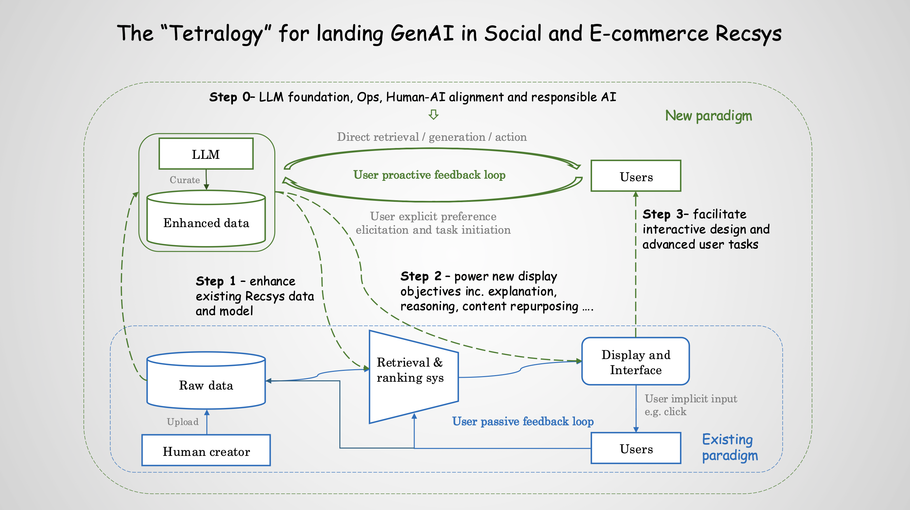

Advances in Simulation Technology for Web Applications (Information Retrieval, Recommender System, Advertising)
(The Web Conference 2023 Tutorial, Austin, Texas)
Over the past two years, GAI has evolved rapidly, influencing various fields including social and e-commerce Recsys. Despite exciting advances, landing these innovations in real-world Recsys remains challenging due to the sophistication of modern industrial product and systems. Our tutorial begins with a brief overview of building industrial Recsys and GAI fundamentals, followed by the ongoing efforts and opportunities to enhance personalized recommendations with foundation models.
We then explore the integration of curation capabilities into Recsys, such as repurposing raw content, incorporating external knowledge, and generating personalized insights/explanations to foster transparency and trust. Next, the tutorial illustrates how AI agents can transform Recsys through interactive reasoning and action loops, shifting away from traditional passive feedback models. Finally, we shed insights on real-world solutions for human-AI alignment and responsible GAI practices.
A critical component of the tutorial is detailing the AI, Infrastructure, LLMOps, and Product roadmap (including the evaluation and responsible AI practices) derived from the production solutions in LinkedIn, Amazon, TikTok, and Microsoft. While GAI in Recsys is still in its early stages, this tutorial provides valuable insights and practical solutions for the Recsys and GAI communities.
Logistics
Tutorial Date and Location:
The tutorial will be held during the TBD session and Time.
Attendence and Registration:
All onsite attendees must be registered. Please refer to the main conference registration website for more information regarding the registration. The tutorial will be recorded and uploaded to the conference website as well.
Please contact daxu5180 at gmail dot com for questions.
About the Speakers
Da Xu
Staff AI Engineer
Da Xu is a Staff AI Engineer at the Network Growth AI team at LinkedIn. He was previous a Manager of Machine Learning at the Search & Recommendation team of Walmart Labs. After joining the industry from UC Berkeley in 2018, Da has been driving research and realworld productions that push the frontier of modern IR systems. In the past several years, his research works that invent theoretical tools for modern IR systems have been published in major ML/AI conferences, including NeurIPS, ICML, ICLR, AAAI. His industrial and application work has been published in such as KDD, WSDM, WWW. Da is also actively engaged in community public services, he was designated by the INFORMS committee as the session chair of Causal Inference Analysis for Information Retrieval for 2021 and 2022. He organized the WSDM'22 and WWW'23 Workshop on Decision Making for Information Retrieval Analysis, and KDD tutorial on Theoretical Foundation for Information Retrieval and Recommender Systems
Danqing Zhang
Senior AI Scienst
Amazon
Danqing is a
Lingling Zheng
Principal Applied Scienst
Microsoft
Lingling is a
Bo Yang
Applied Scientist
Amazon
Bo has been a Machine Learning Engineer at LinkedIn’s Ads AI since 2021. She is responsible for developing the auction, bidding, and decision-making strategies for LinkedIn marketplace systems. She obtained Ph.D in Statistics from University of Virginia in 2019, with emphasis on causal inference and time sires. Bo first joined Target AI as a lead ML scientist in 2019, and she has been serving as PC members for such as KDD, SIGIR, WWW, and co-organizing and presenting at workshops and tutorials for such as WSDM, KDD, and INFORMS.
Guangyu Yang
Senior AI Engineer
Tiktok
Guangyu is a

Shuyuan Xu
AI Researcher
Tiktok
Shuyuan is a
Cindy Liang
Engineering Manager
Cindy is a